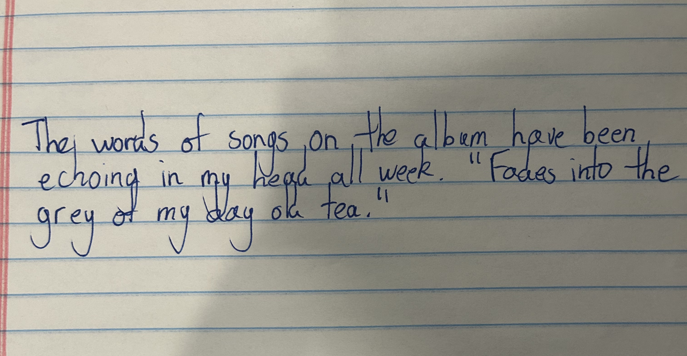

Response Time
Over the last 7 days, the average response time was ms.
This number only accounts for requests made by this application.
4.12 ms
Zero-Shot Classification
Can GPT-4V classify an image without being trained on that particular use case?
100%
Prompt
What is in the image? Return the class of the object in the image. Here are the classes: Toyota Camry, Tesla Model 3. You can only return one class from that list.
Image

Result
Toyota Camry
Counting
Can GPT-4V count the number of objects within an image?
00
Prompt
Count the fruit in the image. Return a single number.
Image

Result
9
Document OCR
Can GPT-4V read a document and return the exact characters in the text?
100%
Prompt
Read the text in the image.
Image

Result
I was thinking earlier today that I have gone through, to use the lingo, eras of listening to each of Swift's Eras. Meta indeed. I started listening to Ms. Swift's music after hearing the Midnights album. A few weeks after hearing the album for the first time, I found myself playing various songs on repeat. I listened to the album in order multiple times.
Handwriting OCR
Can GPT-4V read handwriting?
100%
Prompt
Read the text in the image.
Image
Result
Structured OCR Extraction
Can GPT-4V extract data in a structured format from an image?
100.0%
Prompt
If there are banana in this image, return a JSON object with `x`, `y`, `width` and `height` properties of the banana. All values should be normalized between 0-1 and x&y should be the center point.
Image
Result
Object Detection
Can GPT-4V detect a common object?
18.22%
Prompt
If there are banana in this image, return a JSON object with `x`, `y`, `width` and `height` properties of the banana. All values should be normalized between 0-1 and x&y should be the center point.
Image
Result
Methodology
How we built this project
Every day, we run a set of tests to evaluate how GPT-4 Vision (GPT-4V) performs over time. These tests are designed to monitor core features of GPT-4V.
Each test runs the same prompt and image through GPT-4V and compares the Result to a human-written Result. While making this website, we experimented with prompts and chose the prompt that gave the most accurate results.
Tests are run at 1am PT every day. This site is updated when all tests are complete.
If a line is red, it means the test failed that day; if a line is green, the test passed.